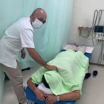
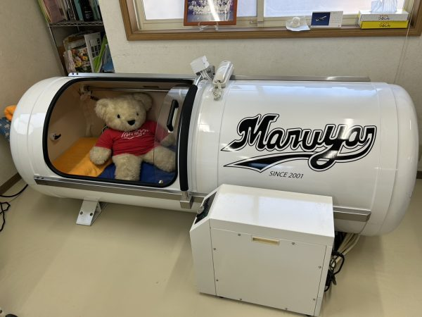

地域に根ざした
接骨院という医療施設。
まるや接骨院は、山梨県富士吉田市にある接骨院(柔道整復師による施術施設)です。捻挫・打撲・骨折・脱臼などのケガから、スポーツ外傷、交通事故によるケガ、産後のお身体のケアまで、地域のみなさまの身体のお悩みに向き合っています。
施設名
まるや接骨院
所在地
山梨県富士吉田市
電話番号
0555-24-6793
当院は医師が常駐する「病院」ではなく、柔道整復師による「接骨院」です。施術内容により健康保険の適用範囲が異なりますので、詳しくはお電話でご確認ください。
施術メニュー
お身体の状態やご希望に合わせて、以下の施術をご用意しています。タップして詳しい内容をご覧ください。
捻挫・打撲・筋損傷(肉離れ)・骨折・脱臼
スポーツ選手の方も多く通院。症状に合わせた丁寧な施術で、早期の競技復帰・日常生活への回復をサポートします。
交通事故によるケガ
各種保険取り扱い・交通事故保険取扱店です。むちうちなど事故によるお身体のお悩みにも対応しています。
酸素カプセル
怪我を早く治すため、疲労回復酸素カプセルをご用意。高気圧・高濃度酸素により、回復と疲労軽減をサポートします。
産後ケア
開業以来、助産師監修のもと産後ケアを実施。出産を終えたお母様のお身体に寄り添う施術を行っています。
院長紹介

院長・柔道整復師
渡辺 将
一人ひとりのお身体の状態とお悩みに向き合い、捻挫・打撲・骨折といったケガから、スポーツによる筋損傷、産後のお身体のケアまで、丁寧な問診と施術を心がけています。「痛みを我慢せず、まずは気軽にご相談ください」をモットーに、地域のみなさまに寄り添う接骨院を目指しています。
患者さまへのサポート
施術以外にも、回復をサポートするサービスをご用意しています。
疲労回復酸素カプセル
高気圧・高濃度酸素で回復と疲労軽減をサポート。
助産師監修 産後ケア
出産を終えたお母様のお身体に寄り添う施術。
各種保険取り扱い
健康保険・交通事故保険など各種保険に対応。
お電話でのご予約
0555-24-6793 まで、お気軽にご連絡ください。



まるや接骨院
山梨県富士吉田市の接骨院
捻挫・打撲から産後ケアまで、地域のみなさまに寄り添う施術を行っています。
まずはお気軽にご相談ください
捻挫・打撲から産後ケアまで、お身体のお悩みをお電話でお聞かせください。